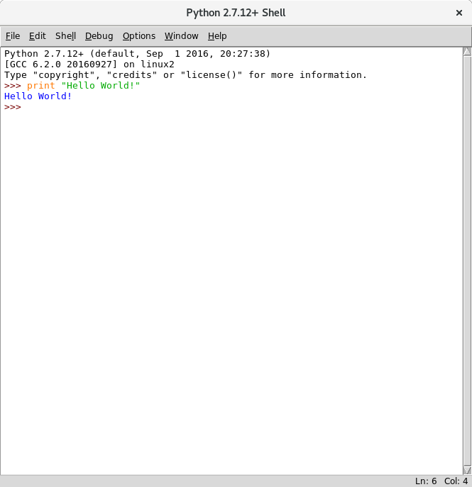

## Cos'è Python?
Python è un linguaggio di programmazione **interpretato**, a tipi **dinamici** e **imperativo**.
È stato creato da Guido Van Rossum nel 1991.
## Punti di forza di Python
* semplicità
* *batteries included*
* *open source*
## Chi usa Python?
- Google
- Dropbox
- Scienziati: NumPy, SciPy, SageMath
- Big Data: Pandas, NumPy
- Machine Learning: Tensorflow
- Altri...
## Come usare Python?
Scaricare l'installer da [https://www.python.org/downloads/](https://www.python.org/downloads/)
## Come usare Python?

## Variabili
Le variabili vengono create usando l'operazione di **assegnamento**
```python
>>> a = 3
>>>
```
Ogni variabile ha un nome, in genere descrittivo del suo scopo.
Il nome è composto di lettere, underscore e cifre, ma non può cominciare con una cifra.
## Ulteriori risorse
* [Tutorial ufficiale(ENG)](https://docs.python.org/3/tutorial/index.html)
* [Vecchia guida per la versione 2(IT)](http://www.python.it/doc/Howtothink/Howtothink-html-it/index.htm)
* [Tutorial interattivo di Code Academy(ENG)](https://www.codecademy.com/learn/python)
* Google, stackoverflow, insegnanti, sperimentare